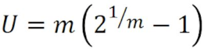

   
    
  
    <div class="docs-wrapper">
        <div class="docs-content">
            <div class="container">
                <article class="docs-article" id="section-1">
                    <header class="docs-header">
                        <h1 class="docs-heading">Time analysis </h1>
                        <section class="docs-intro">
                            <p>Initiation intervals were set manually for each task and the maximum execution time was measured by taking 32 separate readings for each task and the average found.</p>
                        </section><!--//docs-intro-->
                    </header>
                        <section class="docs-section" id="item-2-1">
                        <h2 class="section-heading">Initiation Intervals and Maximum Execution Time </h2>
                        <table class="table">
                            <thead>
                              <tr>
                                <th scope="col">#</th>
                                <th scope="col">Task</th>
                                <th scope="col">Min initiation interval &tau;, <i>theoritical</i> (ms)</th>
                                <th scope="col">Max Execution Time t <i> measured</i> (ms)</th>
                                <th scope="col">&theta;/&tau;</th>
                                <!-- <th scole="col">&tau; &#60; t </th> -->
                                <th scole="col"> t(&theta;	/&tau;)</th>
                              </tr>
                            </thead>
                            <tbody>
                              <tr>
                                <th scope="row">1</th>
                               <td>DisplayUpdateTask</td>
                               <td>100 = &theta;</td>
                               <td>20.76</td>
                               <td>1</td>
                               <td>20.76
                               </td>
                              </tr>
                              <tr>
                                <th scope="row">2</th>
                                <td>MsgOutTask</td>
                                <td>20</td>
                                <td>9.48</td>
                                <td>10</td>
                                <td> 47.4	 </td>
                              </tr>
                              <tr>
                                <th scope="row">3</th>
                                <td>scanKeysTask</td>
                                <td>20</td>
                                <td>0.0536</td>
                                <td>10</td>
                                <td> 0.268</td>
                              </tr>
                              <tr>
                                <th scope="row">4</th>      
                                <td>DecodeMsgTask</td>
                                <td>5</td>
                                <td>4.67 </td>
                                <td>20</td>
                                <td> 9.34</td>
                              </tr>
                              <th scope="row">Total</th>      
                              <td></td>
                              <td></td>
                              <td>34.96 </td>
                              <td></td>
                              <td>81.368&#60;100 </td>
                            </tbody>
                          </table>
                          <!-- <p>All three tasks except scanKeysTask() meet the conditions of having theoritical intiation interval equal to the measure execution time. Due to the numerous function calls and memory access in scanKeysTask, the maximum time is 10 times greater than minimum intiation interval. As this has one of the lowest priorities, the task scheduler will switch to DisplayUpdateTask or 
                              MsgOutTask before finishing scanKeysTask. This means that the process for updating all variables may be slower, the update will not immediately take place. 
                              DecodeMsgTask will also have to wait until the end of scanKeysTask in order to begin, regardless of the theoritical intiation interval as it has a lower priority.
                          </p> -->
                          <!-- <p> DisplayUpdateTask has a measured time slightly over its set intiation interval. This can be due to the way we measured times. Assuming that computing the return values inside the for loop used for testing time, loading the variables in the local registers at the end of each iterations takes time, this function should meet timing conditions.</p>
                          <p> In order for all deadlines to be met, we adjusted scanKeysTask() initiation interval (see github repositor for full code). </p> -->
                          <p>As expected, scanKeysTask takes between 50 and 100 micro seconds to complete. Our implementation is closer to 50 microseconds because there are few advanced feature impemented. 
                              The function is similar to the one from labs2, adding 3 microseconds for function calls, memory access seems reasonable. </p>
                              <p>DisplayUpdateTask has the greatest execution time, since it accesses the serial monitor.</p>
                              <p>MsgOutTask has a relatively high execution time too since it has to access the message variable in RAM and put it in the queue. </p>
                          <li class="list-inline-item"><a href="https://github.com/chocovore17/MusicSynthethiser"><i class="fab fa-github fa-fw"></i></a></li>

                        </section><!--//section-->
                        
                        
                    <section class="docs-section" id="item-2-2">
                        <h2 class="section-heading">Critical Instant Analysis of Rate Monotonic Scheduler</h2>
                        <p>For a single CPU, the tasks have fixed execution times. The fixed initiation interval for each task is also its deadline. There are no dependencies or switching overheads. The task priority is fixed and the shortest initiation has the highest priority.
 
                            The worst case is if every task is initiated at the same time. If so the latency is 2
                            </p>
                            <p>
                                <em>Ln=100/10 x 9.48 + 100/20 x 0.0536 + 100/5 x 4.67 + 100/100 x 20.76</em> </p>
                             <p>   <em>Ln=161.8 ms</em>
                            </p>
                            <!-- <p>As expected, scanKeysTask is the most CPU intensive function. It loads the most variables, uses locks, computes function calls as well as going through several for loop that may slow down this thread. 
                                The CPU has to calculate the return address after each iteration, load the variables back in the temporary registers. 
                                Each memory access considerably slows down the program, reading volatile variables will make the CPU wait for data from RAM. 
                                Depending on how the CPU optimises scanKeysTask function, this can force the compiler to wait for variable for several cycles, without being able to compute other functions since we use newly updated variables in each function. 
                            </p> -->
                    </section><!--//section-->
                        
                </article><!--//docs-article-->
                
            <article class="docs-article" id="section-1">
              <header class="docs-header">
                  <h1 class="docs-heading">CPU Utilisation</h1>
                  <section class="docs-intro">
                      CPU utilisation will be the sum of each task utilisation.
                          
                  </section><!--//docs-intro-->
              </header>
                  <section class="docs-section" id="item-2-1">
                  <h2 class="section-heading">Worst case analysis</h2>
                  <p>
                      With time analysis using micros(), we obtained the task utilisation for each task as <em>CPU = 20.76/100+ 9.48/10+0.0536/10+4.67/5 = 2.095</em>
                  </p>
                  <p> For a number <em>m</em> tasks under RMS, CPU utilisation is computed as follows
                      <!-- insert image -->
                      
                      Which yield to <em>CPUMax = 0.757</em> This is relatively low utilisation for worst case conditions considering it is unlikely to be pressing all keys and knobs on the keyboard simultaneously. This value seems correct since there is room to implement other advanced features. 
                  </p>  
                  
            
              </section><!--//section-->
                  
                  
              <!-- <section class="docs-section" id="item-2-2">
                  <h2 class="section-heading">Key tuning</h2>
                  <a href="https://www.pianoscales.org">Piano Scales, used to implement different keys</a>
              </section> -->
                  
          </article><!--//docs-article-->
      
        
            </div> 
        </div>
    </div><!--//docs-wrapper-->
        
       